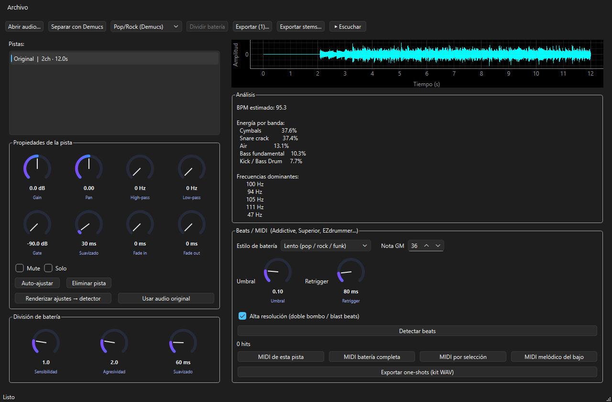
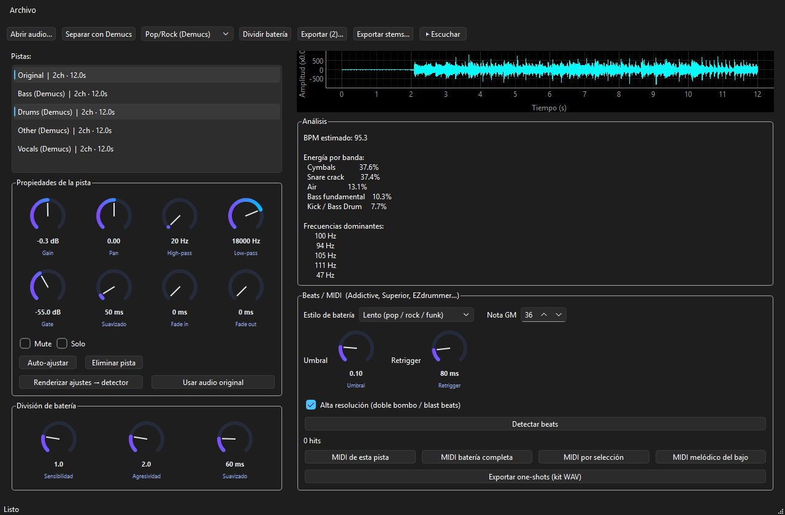
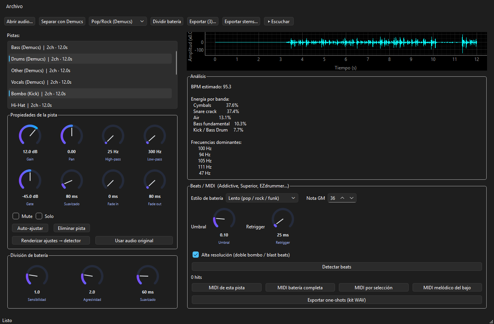
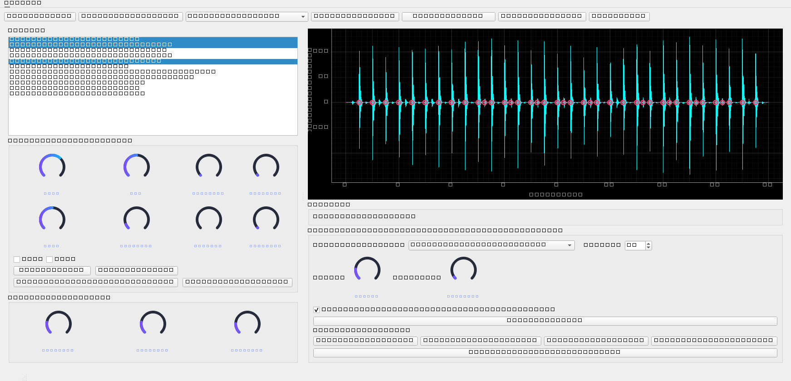
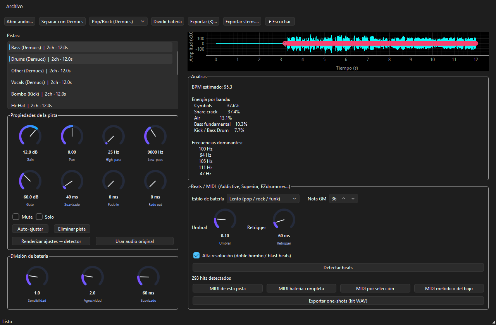

Bass & Drums Extractor
Aplicación de escritorio en Python y PySide6 para aislar instrumentos con Demucs, descomponer la batería en piezas individuales, detectar golpes, exportar MIDI y generar one-shots WAV listos para Addictive Drums, Superior Drummer, EZdrummer y más.
Qué hace
Desde cargar un audio hasta exportar un kit de samples o MIDI melódico del bajo, BeatXtractor cubre el flujo completo de producción.

Abre WAV, FLAC, AIFF, MP3, M4A, AAC, OGG u OPUS. Visualiza la forma de onda, el tempo estimado, la energía por bandas y las frecuencias dominantes.
Aísla batería, bajo, voces y otros con Demucs o modo Sinfónico
Bombo, redoblante, hi-hat, platillos y toms con algoritmo avanzado
Por pieza, batería completa, selección o bajo melódico con pitch
Kit WAV por golpe y stems en WAV, FLAC, MP3 o AIFF
Separación por instrumentos
Usa HT-Demucs 4 para separar batería, bajo, voces y otros en segundos. El modo Sinfónico descompone instrumentos de orquesta. Los stems generados se auto-ajustan de nivel automáticamente.

División de batería

Con la pista de batería aislada, ajusta Sensibilidad, Agresividad y Suavizado para dividir el kit. Cada pieza recibe sus propios filtros optimizados.
Detección de beats
Selecciona una pieza, ajusta Umbral y Retrigger, elige estilo lento o rápido (doble bombo / blast beats) y detecta. Los golpes aparecen marcados sobre la forma de onda.
| Pieza | Nota MIDI |
|---|---|
| Bombo (Kick) | 36 (C1) |
| Redoblante (Snare) | 38 (D1) |
| Hi-Hat | 42 (F#1) |
| Platillos | 49 (C#2) |
| Tom Agudo / Medio / Bajo | 48 / 45 / 43 |


La pista de bajo separada por Demucs se analiza para generar notas con pitch real, no solo percusión. Perfecto para rearmonizar o usar en un DAW.
Exportación
Exporta exactamente lo que escuchas tras aplicar gain, filtros, gate y fades. Los one-shots incluyen nombre, número y velocidad por golpe.
MIDI de la pieza activa, batería completa con mapa GM, selección múltiple o bajo melódico.
Cada golpe recortado como sample individual, organizado por pieza. Compatible con superiores de batería.
Exporta todas las pistas procesadas a una carpeta, o mezcla seleccionadas en WAV, FLAC, MP3 o AIFF.
Guarda pistas, separación, división y ajustes. Retoma el trabajo con Ctrl+S / Ctrl+L.
Instalación
Requisitos: Python 3.10+, 4 GB RAM recomendados. Demucs descarga su modelo automáticamente en la primera separación.
git clone https://github.com/MikeHell84/BeatXtractor.git
cd BeatXtractor
python -m venv venv
# Windows: .\venv\Scripts\activate
# Linux/macOS: source venv/bin/activate
pip install -r requirements.txt
python app.py
# O en Windows: .\run.ps1